공조냉동기계기사(구) (2010-05-09 기출문제)
1과목: 기계열역학
1. 증기터빈에서 증기의 상태변화로서 가장 이상적인 것은?
- 폴리트로픽 변화(n=1.3)
- 폴리트로픽 변화(n=1.5)
- 가역단열변화
- 비가역단열변화
(정답률: 71%)

2. 포화 증기를 단열 압축시키면 일반적으로 어떻게 되겠는가?
- 압력이 높아지고 습도가 증가한다.
- 압력은 높아지나 온도는 일정하다.
- 압력과 온도가 높아져 과열증기가 된다.
- 압력은 높아지나 온도는 낮아진다.
(정답률: 64%)
3. 비가역 단열변화에 있어서 엔트로피 변화량은 어떻게 되는가?
- 증가한다.
- 감소한다.
- 변화량은 없다.
- 증가할 수도 감소할 수도 있다.
(정답률: 71%)
4. 물 10kg을 1기압 하에서 20℃로부터 60℃까지 가열할 때 엔트로피의 증가량은 약 몇 kJ/K 인가? (단, 물의 정압비열은 4.18kJ/kgㆍK 이다.)
- 9.78
- 5.35
- 8.32
- 41.8
(정답률: 61%)
5. 다음 T-S 선도에서 과정 1-2가 가역일 때 빗금 친 부분은 무엇을 나타내는가?
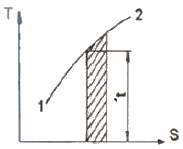
- 엔탈피
- 엔트로피
- 열량
- 일량
(정답률: 79%)
6. 다음 열역학 성징(상태량) 중 종량적 성질인 것은?
- 질량
- 온도
- 압력
- 비체적
(정답률: 72%)
7. 이상적인 시스템에 하루 2200 kcal를 공급 한다고 한다. 이 시스템에서 발생하는 평균 동력은 약 얼마인가? (단, 1 kcal은 4180 J이다.)
- 63W
- 88W
- 98W
- 106W
(정답률: 59%)
8. 냉동용량이 35kW인 어느 냉동기의 성능계수가 4.8이라면 이 냉동기를 작동하는 데 필요한 동력은?
- 약 9.2 kW
- 약 8.3 kW
- 약 7.3 kW
- 약 6.5 kW
(정답률: 78%)
9. 증기동력시스템에서 이상적인 사이클로 카르노사이클을 택하지 않고 랭킨사이클을 택한 주된 이유로 가장 적합한 것은?
- 이론적으로 카르노사이클을 구성하는 것이 불가능하다.
- 랭킨사이클의 효율이, 동일한 작동 온도를 갖는 카르노사이클의 효율보다 높다.
- 수증기와 액체가 혼합된 습증기를 효율적으로 압축하는 펌프를 제작하는 것이 어렵다.
- 보일러에서 과열 과정을 정압 과정으로 가정하는 것이 타당하지 않다.
(정답률: 63%)
10. 다음 사항은 기계열역학에서 일과 열(熱)에 대한 설명이다. 이 중 틀린 것은?
- 일과 열은 전달되는 에너지이지 열역학적 상태량은 아니다.
- 일이 기본단위는 J(joule)이다.
- 일(work)의 크기는 무게(힘)와 힘이 작용하여 이동한 거리를 곱한 값이다.
- 일과 열은 점함수이다.
(정답률: 81%)
11. 1 kg의 기체가 압력 50 kPa, 체적 2.5 m3의 상태에서 압력 1.2MPa, 체적 0.2 m3의 상태로 변하였다. 엔탈피의 변화량은 약 몇 kJ인가? (단, 내부에너지의 증가 U2-U1=0 이다.)
- 306
- 206
- 155
- 115
(정답률: 55%)
12. 고열원과 저열원 사이에서 작동하는 카르노사이클 열기관이 있다. 이 열기관에서 60 kJ의 일을 얻기 위하여 100 kJ의 열을 공급하고 있다. 저 열원의 온도가 15℃라고 하면 고 열원의 온도는?
- 128℃
- 288℃
- 447℃
- 720℃
(정답률: 56%)
13. 온도가 350K인 공기의 절대압력이 0.3MPa, 체적이 0.3 m3, 엔탈피가 100 kJ이다. 이 공기의 내부에너지는?
- 1 kJ
- 10 kJ
- 15 kJ
- 100 kJ
(정답률: 69%)
14. 냉동시스템의 증발기(열교환기)에 냉매 R-134a가 온도 5℃, 엔탈피 380 kJ/kg, 질량 유량 0.1 kg/s로 유입되어 포화증기로 유출된다. 공기는 25℃로 유입되어 10℃로 나온다. 공기의 비열은 1.004 kJ/kgㆍ℃ 이다. 증발기를 통과하는 공기의 질량 유량은?
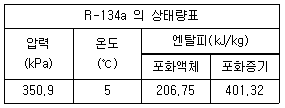
- 0.142 kg/s
- 0.270 kg/s
- 0.851 kg/s
- 1.15 kg/s
(정답률: 47%)
15. 피스톤-실린더 장치 안에 300 kPa, 100℃의 이산화탄소 2 kg이 들어있다. 이 가스를 PV1.2=constant인 관계를 만족하도록 피스톤 위에 추를 더해가며 온도가 200℃가 될 때까지 압축하였다. 이 과정 동안의 열전달량은 약 몇 kJ인가? (단, 이산화탄소의 정적비열(Cv)=0.653 kJ/kgㆍK 이고, 정압비열(Cp)=0.842 kJ/kgㆍK 이며, 각각 일정하다.)
- -189
- -58
- -20
- -130
(정답률: 53%)
16. 다음 기체 줄 기체상수가 가장 큰 것은?
- 수소
- 산소
- 공기
- 질소
(정답률: 78%)
17. 상태 1에서 상태 2로의 열역학 과정 중 운동에너지와 위치에너지의 변화를 무시할 때 일을
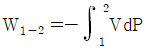
로 계산할 수 있는 경우는? (단, P는 압력, V는 체적이다.)- 가역 정상상태 정상유동 과정
- 비가역 정상상태 정상유동 과정
- 가역 밀폐 시스템의 과정
- 비가역 밀폐 시스템의 과정
(정답률: 58%)
18. 움직이고 있던 중량 5 ton의 차에 브레이크를 걸었더니 42.7m 미끄러진 후에 완전히 정지하였다. 노면과 바퀴 사이에 마찰계수를 0.2라 하면, 제동 중에 발생된 열량은 약 몇 kJ인가?
- 49
- 419
- 837
- 17800
(정답률: 64%)
19. 정상상태 정상유동 과정의 팽창밸브가 있다. 입구에 액체가 유입되며, 이 과정을 스로틀로 간주할 수 있다. 입구상태를 1, 출구상태를 2로 각각 나타낼 때, 다음 중 어느 관계식이 가장 정확한가?
- u1=u2 (내부에너지)
- h1=h2 (엔탈피)
- s1=s2 (엔트로피)
- v1=v2 (비체적)
(정답률: 80%)
20. 다음 P-h 선도를 이용하여 증기압축 냉동기의 성능계수를 구하면 얼마인가?
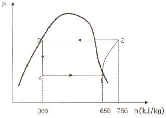
- 3.5
- 4.5
- 5.5
- 6.5
(정답률: 70%)
2과목: 냉동공학
21. 냉동사이클에서 응축온도 상승에 의한 영향과 가장 거리가 먼 것은?
- COP감소
- 압축기 토출가스 온도 상승
- 압축비 증가
- 압축기 흡입가스 압력 상승
(정답률: 67%)
22. 고속 다기통 압축기의 단점에 대한 설명으로 옳지 않은 것은?
- 윤활유의 소비량이 많다.
- 토출가스의 온도와 윤활유 온도가 높다.
- 압축비의 증가에 따른 체적효율의 저하가 크다.
- 수리가 복잡하며 부품은 호환성이 없다.
(정답률: 75%)
23. 다음 중 얼음제조 설비가 아닌 것은?
- 팩 아이스 머신(pack ice machine)
- 칩 아이스 머신(chip ice machine)
- 드라이 아이스(dry ice)
- 튜브 아이스 머신(tube ice machine)
(정답률: 75%)
24. 브라인(brine)으로서 필요한 조건이 아닌 것은?
- 비열이 클 것
- 열전도율이 좋을 것
- 점성이 클 것
- 동결온도가 낮을 것
(정답률: 83%)
25. 핀(fin)이 없는 공기냉각기에 있어서 냉각관 외면에는 서리가 4mm부착되어 있다. 이 경우 냉각관의 열통과율(kcal/m2h℃)은 약 얼마인가? (단, 냉각관의 두께, 서리의 두께에 의한 면적증가와 관의 열저항은 무시한다. 또한 공기측 열전달율 aa=8 kcal/m2h℃, 냉매측 열전달율 ar=600 kal/m2h℃, 서리의 열전도율 λ=0.2 kcal/mh℃ 이다.)
- 6.8
- 7.1
- 7.5
- 8.3
(정답률: 53%)
26. 냉동기유가 갖추어야할 조건으로 알맞지 않는 것은?
- 응고점이 낮고, 인화점이 높아야 한다.
- 냉매와 잘 반응하지 않아야 한다.
- 산화가 되기 쉬운 성질을 가져야 된다.
- 수분, 산분을 포함하지 않아야 된다.
(정답률: 77%)
27. 냉동장치에 부착하는 안전장치에 관한 설명이다. 맞는 것은?
- 안전밸브는 압축기의 헤드나 고압측 수액기 등에 설치한다.
- 안전밸브의 압력이 높은 만큼 가스의 분사량이 증가하므로 규정보다 높은 압력으로 조정하는 것이 안전하다.
- 압축기가 1대일 때 고압차단 장치는 흡입밸브에 부착한다.
- 유압보호 스위치는 압축기에서 유압이 일정 압력 이상이 되었을 때 압축기를 정지시킨다.
(정답률: 58%)
28. 다음과 같은 15 RT 암모니아 냉동장치의 압축기 운전 소요 동력(kW)은 약 얼마인가? (단, 압축기 압축효율 ηc=0.7, 기계효율 ηm=0.9, 1RT=3320 kal/h 이다.)
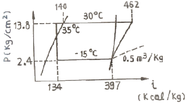
- 24.3
- 22.7
- 16.8
- 11.5
(정답률: 64%)
29. 수냉식 응축기와 공냉식 응축기의 작용을 혼합한 것은?
- 7통로식 응축기
- 증발식 응축기
- 지수식 응축기
- 대기식 응축기
(정답률: 74%)
30. 액분리기(Accumulator) 설치에 대한 설명 중 옳지 않는 것은?
- 증발기와 압축기 사이에 설치한다.
- 증발기보다 낮은 위치에 설치해야 한다.
- 증발기내 용적의 25%정도의 용적을 가져야 한다.
- 만액식 증발기(할로카본냉매)에서는 꼭 필요하지 않다.
(정답률: 52%)
31. 냉동용 압축기의 압력이 게이지압력으로 각각 저압이 1 kgf/cm2이고, 고압이 13.5 kgf/cm2일 때 압축비는 약 얼마인가? (단, 대기압은 1.0332 kgf/cm2 이다.)
- 6.15
- 7.15
- 12.5
- 13.5
(정답률: 61%)
32. 다음은 증발기에 관한 내용이다. 잘못 설명된 것은?
- 냉매는 증발기속에서 습증기가 건포화 증기로 변한다.
- 건식 증발기는 유회수가 용이하다.
- 만액식 증발기는 리키드백을 방지하기 위해 액분리기를 설치한다.
- 액 순환식 증발기는 액 펌프나 저압수액기가 필요 없으므로 소형 냉동기에 유리하다.
(정답률: 67%)
33. 냉동사이클의 구분에서 다단압축 사이클이 아닌 것은?
- 2단압축 1단팽창사이클
- 2단압축 2단팽창사이클
- 2단압축 2단증발사이클
- 2원 냉동사이클
(정답률: 80%)
34. 프레온 냉동장치에서 가용전에 관한 설명 중 옳지 않은 것은?
- 가용전의 용융온도는 75℃ 이하로 되어 있다.
- 가용전은 Sn(주석), Cd(카드뮴), Bi(비스무트)등의 합금이다.
- 온도상승에 따른 이상 고압으로부터 응축기 파손을 방지한다.
- 가용전의 구경은 안전밸브 최소구경의 1/2 이하이어야 한다.
(정답률: 74%)
35. H2O-L1Br흡수식 냉동기의 계통 중 냉매의 순환 과정을 바르게 표현한 것은?
- 증발기(냉각기) → 흡수기 → 발생기 → 응축기
- 증발기(냉각기) → 발생기 → 흡수기 → 응축기
- 흡수기 → 증발기(냉각기) → 발생기 → 응축기
- 흡수기 → 발생기 → 증발기(냉각기) → 응축기
(정답률: 70%)
36. 1 냉동톤(한국냉동톤)을 올바르게 설명한 것은?
- 0℃의 물 1000kg을 24시간 동안에 0℃의 얼음으로 만드는 냉동능력
- 1℃의 물 1000kg을 24시간 동안에 0℃의 얼음으로 만드는 냉동능력
- 0℃의 물 1kg을 24시간 동안에 0℃의 얼음으로 만드는 냉동능력
- 1℃의 물 1kg을 24시간 동안에 0℃의 얼음으로 만드는 냉동능력
(정답률: 78%)
37. 모리엘(P-h)선도상에서 응축온도를 일정하게 하고, 증발온도를 저하시킬 때 발생하는 현상으로 잘못된 것은?
- 소요 동력이 증대한다.
- 압축비가 감소한다.
- 냉동능력이 감소한다.
- 플래쉬 가스 발생량이 증가한다.
(정답률: 65%)
38. 다음 설명 중 옳은 것은?
- 메틸렌 크로라이드, 프로필렌 글리콜, 염화칼슘 용액은 유기질 브아인이다.
- 브라인은 잠열 및 현열 형태로 열을 운반한다.
- 프로필렌글리콜은 부식성이 적고 독성이 없어 냉동식품의 동결용으로 사용된다.
- 식염수의 공정점은 염화칼슘의 공정점보다 낮다.
(정답률: 71%)
39. 축열시스템에 대한 설명으로 잘못된 것은?
- 열흐름에 관해서는 모두 축열장치를 경유하는 전량축열과 일부열이 축열장치를 경유하는 부분축열이 있다.
- 열의 공급방법은 축열장치 단독으로 공급하는 방법과 축열장치와 열원장치에서 동시에 공급하는 방법이 있다.
- 축열 시간은 일반적으로 야간에 축열, 주간에 방열하는 1일 사이클을 많이 사용한다.
- 수축열 시스템이란 냉열을 얼음에 저장하는 방법으로 작은 체적에 효율적으로 냉열을 저장하는 방법이다.
(정답률: 64%)
40. 흡수식 냉동장치에 대한 설명으로 적당하지 않은 것은?
- 초기 운전 시 정격 성능을 발휘할 때까지의 도달 속도가 느리다.
- 대기압 이하에서 작동하므로 취급에 위험성이 완화된다.
- 용액의 부식성이 크므로 기밀성 관리와 부식 억제제의 보충에 엄격한 주의가 필요하다.
- 야간에 열을 저장하였다가 주간의 부하에 대응할 수 있다.
(정답률: 72%)
3과목: 공기조화
41. 온풍로 난방에 대한 특징을 설명한 것으로 옳지 않은 것은?
- 시스템 전체의 열용량이 적고 예열 소요시간이 짧다.
- 취출온도의 차가 커서 온도분포가 나쁘다.
- 설비비가 저렴하다.
- 열효율이 나쁘고 연료가 많이 든다.
(정답률: 69%)
42. 관류보일러에 대한 설명으로 올바른 것은?
- 드럼과 여러개의 수관으로 구성되어 있다.
- 부하변동에 대한 추종성이 좋다.
- 취급이 용이하고 수처리가 필요 없다.
- 간단히 고압의 증기를 얻기가 곤란하다.
(정답률: 52%)
43. 난방용 보일러의 요구조건이 아닌 것은?
- 일상취급 및 보수관리가 용이할 것
- 건물로의 반출입이 용이할 것
- 높이 및 설치면적이 적을 것
- 증기 또는 온수의 발생에 요하는 시동시간이 길 것
(정답률: 78%)
44. 어떤 공기의 수증기 분압=P, 절대습도=x, 비체적=v라 하고 이와 동일 온도인 포화공기의 수증기분압=Ps, 절대습도=Xs, 비체적=Vs라 할 때 이 공기의 상대습도는?
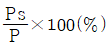
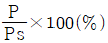
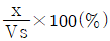
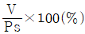
(정답률: 71%)
45. 증기난방 방식에 대한 설명 줄 틀린 것은?
- 배관방법에 따라 단관식과 복관식이 있다.
- 환수 방식에 따라 중력환수식과 진공환수식, 기계환수식으로 구분한다.
- 제어성이 온수에 비해 양호하다.
- 부하기기에서 증기를 응축시켜 응축수 만을 배출한다.
(정답률: 53%)
46. 덕트의 마찰저항을 증가시키는 요인은 여러가지가 있다. 이들 중 값이 커지면 마찰저항이 감소되는 것은?
- 덕트재료의 마찰 저항계수
- 덕트 길이
- 덕트 직경
- 풍속
(정답률: 80%)
47. 냉수를 쓰는 향류형 공기 냉각코일에서 30℃의 공기를 16℃까지 냉각하는 데에 7℃의 냉수를 통하고 냉수온도는 열 교환에 의해 5℃ 상승되었을 때 냉각열량은 약 몇 kcal/h 인가? (단, 코일의 전체 열통과율은 800kcal/m2h℃ 이고, 전열 면적은 2.5m2 이다.)
- 10380
- 14870
- 25960
- 32960
(정답률: 51%)
48. 난방설비의 분류에서 간접 난방법에 속하는 것은?
- 증기난방
- 온풍난방
- 온수난방
- 복사난방
(정답률: 57%)
49. 난방시 빌딩의 1층 현관을 통하여 침입해 들어오는 침입외기에 의한 영향을 줄이기 위한 방법으로 부적당한 것은?
- 회전물을 설치한다.
- 출입구에 자동개폐문을 설치한다.
- 에어커튼을 설치한다.
- 이중물의 중간에 강제대류 컨벡터를 설치한다.
(정답률: 78%)
50. 다음 공조방식 중 개별식에 속하는 것은 어느 것인가?
- 팬 코일 유니트 방식
- 단일 덕트 방식
- 2중 덕트 방식
- 패키지 유니트 방식
(정답률: 74%)
51. 인위적으로 실내 또는 일전한 공간의 공기를 사용 목적에 적합하도록 공기조화 하는데 있어서 고려하지 않아도 되는 것은?
- 온도
- 습도
- 색도
- 기류
(정답률: 79%)
52. 어느 건물 서편의 유리 면적이 40m2이다. 안쪽에 크림색의 베네시언 블라인드를 설치한 유리면으로부터 오후 4시에 침입하는 열량은 약 몇 kcal/h인가? (단, 외기는 33℃, 실내는 27℃, 유리는 1중, 유리의 열통과율 K : 5.08kcal/m2h℃, 유리창의 복사량 Igr : 523kcal/m2h, 차폐게수 Ks : 0.56 이다.)
- 12934
- 12191
- 11715
- 70291
(정답률: 51%)
53. 냉각코일 또는 에어워셔의 용량으로 감당해야 할 부하에 포함되지 않는 것은?
- 실내취득열량
- 기기취득열량
- 외기부하
- 펌프, 배관부하
(정답률: 69%)
54. 공기조화방식에 있어 지구 환경보존과 에너지 절약 추세에 따른 특수 열원방식으로만 짝지어진 것은?
- 열회수 방식, 흡수식 냉동기+보일러 방식
- 흡수식 냉온수기 방식+보일러방식
- 열병합발전 방식, 축열 방식
- 터보 냉동기, 축열 방식
(정답률: 78%)
55. 다음 중 축류형 취출구의 종류로 맞는 것은?(오류 신고가 접수된 문제입니다. 반드시 정답과 해설을 확인하시기 바랍니다.)
- 아네모스탯형 취출구
- 펑커형 취출구
- 팬형 취출구
- 다공판형 취출구
(정답률: 63%)
56. 다음 중 전공기방식의 특징이 아닌 것은?
- 송풍량이 충분하여 실내오염이 적다.
- 환기용 팬(fan)을 설치하면 외기냉방이 가능하다.
- 실내에 노출되는 기기가 없어 마감이 깨끗하다.
- 천장의 여유공간이 적을 때 적합하다.
(정답률: 77%)
57. 다음 공기조화기에 관한 설명 중 옳은 것은?
- 유니트 히터는 가열코일과 팬, 케이싱으로 구성된다.
- 유인 유니트는 팬만을 내장하고 있다.
- 공기 세정기를 사용하는 경우에는 엘리미네이터를 사용하지 않아도 좋다.
- 팬코일 유니트는 팬과 코일 및 냉동기로 구성된다.
(정답률: 71%)
58. 공기조화 설비를 구성하는 열운반 장치 중 공조된 공기를 실내로 송풍하기 위하여 덕트는 반드시 필요한 설비이다. 이 덕트 중 공조기 출구와 공조기 입구사이의 계통에만 필요한 덕트 관련 설비에 해당되지 않은 것은?
- 급기덕트
- 외기덕트
- 제연덕트
- 환기덕트
(정답률: 71%)
59. 밀폐된 공간에서 공기를 가열하거나 냉각시킬 때 변하지 않는 것은?
- 건구온도
- 절대습도
- 엔탈피
- 상대습도
(정답률: 65%)
60. 공기조화 방식의 적용 장소에 따른 조합 중 틀린 것은?
- 단일덕트 방식 - 극장
- 덕트병용팬코일유니트 방식 - 사무실
- 패키지유니트 방식 - 음식점
- 팬코일유니트 방식 - 방송국 스튜디오
(정답률: 61%)
4과목: 전기제어공학
61. 다음 중 파고율이 가장 큰 파형은?
- 삼각파
- 정현파
- 방원파
- 구형파
(정답률: 70%)
62. 온도를 전압으로 변환시키는 것은?
- 포토다이오드
- 광전관
- 광전다이오드
- 열전대
(정답률: 78%)
63. 3상 유도전동기의 속도제어방법으로 사용되는 것이 아닌 것은?
- 슬립의 변화에 의한 방법
- 용량의 변화에 의한 방법
- 극수의 변화에 의한 방법
- 주파수의 변화에 의한 방법
(정답률: 57%)
64. 직류 전동기의 속도제어법이 아닌 것은?
- 전압제어
- 계자제어
- 직렬저항제어
- 주파수제어
(정답률: 53%)
65. 농형 유도전동기의 기동방법 중 보통 10~15kW 정도 용량의 전동기에 사용하는 방법으로 기동전류가 전전압 기동전류의 1/3 로 감소될 수 있는 기동법은?
- 전전압 기동법
- Y-△ 기동법
- 기동보상기에 의한 기동법
- 리액터 기동법
(정답률: 70%)
66. 단위 피드백 제어계통에서 입력과 출력이 같다면 전향전달함수 G의 값은?
- ㅣGㅣ=0
- ㅣGㅣ=0.707
- ㅣGㅣ=1
- ㅣGㅣ=∞
(정답률: 58%)
67. 논리식 A=X(X+Y)를 간단히 하면?
- A=X
- A=Y
- A=X+Y
- A=XㆍY
(정답률: 64%)
68. 인덕턴스 20mH에 실효값 50V, 60Hz인 정현파 교류전압을 인가하였을 때, 인덕턴스에 축적되는 평균 자기에너지는 약 몇 [J] 인가?
- 0.44
- 1.44
- 6.34
- 63.4
(정답률: 30%)
69. 절연저항을 측정하기 위해 사용되는 계측기는?
- 메거
- 휘스톤브리지
- 켈빈브리지
- 저항계
(정답률: 77%)
70. 100V의 전압으로 30C의 전기량을 20초 동안에 운반했을 때 전력은?
- 50[W]
- 100[W]
- 150[W]
- 200[W]
(정답률: 65%)
71. 서보기구에서 주로 사용하는 제어량은?
- 전류
- 전압
- 방향
- 속도
(정답률: 67%)
72. 물체의 위치, 방위, 자세 등의 기계적 변위를 제어량으로 해서 목표값의 임의의 변화에 항상 추종되도록 구성된 제어장치는?
- 프로세서제어
- 서보기구
- 자동조정
- 정치제어
(정답률: 69%)
73. 세라믹 콘덴서 소자의 표면에 103K 라고 적혀 있을 때 이 콘덴서의 용량은 몇 [μF] 인가?
- 0.01
- 0.1
- 103
- 103
(정답률: 49%)
74. 되먹임 제어를 바르게 설명한 것은?
- 기계 스스로 판단하여 수정동작을 하는 방식
- 프로그램의 순서대로 순차적으로 제어하는 방식
- 미리 정해진 순서에 따라 순차적으로 제어가 진행되는 제어방식
- 외부에서 명령을 입력하는데 따라 제어되는 방식
(정답률: 58%)
75. 피드백 제어계가 시퀀스 제어계와 비교하여 이점으로 옳지 않은 것은?
- 정확성이 증가된다.
- 대역폭이 증가된다.
- 입력과 출력사이의 오차를 줄인다.
- 구조가 간단하고 설치비가 저렴하다.
(정답률: 72%)
76. 그림은 L1이 점등하면 L2가 소등되고, L2가 점등되면 L1이 소등되는 회로이다. A에 알맞은 접점은?
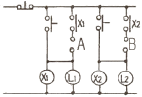
- X1-a접점
- X1-b접점
- X2-a접점
- X2-b접점
(정답률: 53%)
77. 다음 신호르흠선도와 등가인 블록선도는?
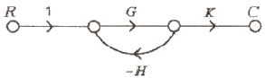
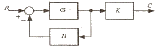
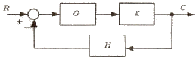
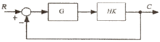
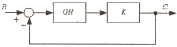
(정답률: 70%)
78. 일정전압의 직류전원에 저항을 접속하고, 전류를 흘릴 때 이 전류값을 20% 감소시키기 위한 저항값은 처음의 몇배가 되는가?
- 0.65
- 0.85
- 0.91
- 1.25
(정답률: 49%)
79. 자동제어계의 디지털 제어에 적합한 전동기는?
- 유도전동기
- 직류전동기
- 스텝전동기
- 동기전동기
(정답률: 55%)
80. 시퀀스 제어에 관한 설명으로 옳지 않은 것은?
- 조합논리회로도로도 사용된다.
- 기계적 계전기로도 사용된다.
- 폐회로 제어계로도 사용된다.
- 시간지연요소로도 사용된다.
(정답률: 58%)
5과목: 배관일반
81. 도시가스 배관시 배관이 움직이지 않도록 관지름 13~33mm 미만은 몇 m마다 고정 장치를 설치해야 하는가?
- 1m
- 2m
- 3m
- 4m
(정답률: 74%)
82. 습공기에 대한 설명 중 옳지 않은 것은?
- 상대습도가 일정할 경우 온도가 높을수록 비체적은 커진다.
- 온도가 일정할 경우 상대습도가 높을수록 절대습도는 낮아진다.
- 상대습도가 일정할 경우 온도가 높을수록 엔탈피는 커진다.
- 온도가 일정한 경우 상대습도가 높을 경우 노점온도는 높아진다.
(정답률: 50%)
83. 통기관의 종류에서 최상부의 배수 수평관이 배수 수직관에 접속된 위치보다도 더욱 위로 배수수직관을 끌어 올려 대기 중에 개구하여 사용하는 통기관은?
- 각개 통기관
- 루프 통기관
- 신정 통기관
- 도피 통기관
(정답률: 63%)
84. 암모니아 냉동장치 배관재료로 사용할 수 없는 것은?
- 이음매 없는 동관
- 배관용 탄소강관
- 저온배관용 강관
- 배관용 스테인리스강관
(정답률: 76%)
85. 내구성이 가장 좋은 신축 이음쇠는?
- 루프형
- 슬리브형
- 벨로즈형
- 스위블형
(정답률: 50%)
86. 방열기 주위 배관 설명으로 옳지 않은 것은?
- 방열기 우위는 스위블 이음으로 배관한다.
- 공급관은 앞쪽올림의 역구배로 한다.
- 환수관은 앞쪽내림의 순구배로 한다.
- 구배를 취할 수 없거나 수평주관이 2.5m 이상일 때는 한 치수 작은 지름으로 한다.
(정답률: 73%)
87. 일반적으로 배관계의 지지에 필요한 조건으로서 맞지 않는 것은?
- 관과 관내 유체 및 그 부속장치, 단열피복 등의 합계중량을 지지하는데 충분해야 한다.
- 온도변화에 의한 관의 신축에 대하여 적응할 수 있어야 한다.
- 수격현상 또는 외부에서의 진동, 동요에 대해서 견고하게 대응할 수 있어야 한다.
- 배관계의 소음이나 진동에 의한 영향을 되도록이면 외부에 전달하여야 한다.
(정답률: 78%)
88. 급수배관 시공법 중 틀린 것은?
- 급수관의 모든 기울기는 1/250을 표준으로 한다.
- 수격작용을 방지하기 위해 급히 닫히고 열리는 밸브 근처에는 공기실을 설치한다.
- 급수펌프의 배관은 흡입관을 가능한 길게 한다.
- 급수관을 매설할 때 한랭지 또는 중차량의 통로인 경우 1m 이상의 깊이로 한다.
(정답률: 63%)
89. 공기의 흐름방향을 조절 할 수 있으나 풍량은 조절 할 수 없고 환기용 흡입구나 배기구로 사용되는 것은?
- 그릴(grilles)
- 디퓨저(diffusers)
- 레지스터(registers)
- 애니모스탯(anemostat)
(정답률: 69%)
90. 역지밸브(check valve)의 도시기호는?
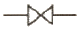
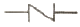
(정답률: 73%)
91. 급탕배관 시공에 대한 설명 중 옳지 않는 것은?
- 배관의 굽힘 부분에는 벨로우즈이음을 한다.
- 하향식 급탕주관의 최상부에는 공기빼기 장치를 설치한다.
- 팽창관의 관경은 겨울철 동결을 고려하여 25A 이상으로 한다.
- 단관식 급탕배관 방식에는 상향배관, 하향배관 방식이 있다.
(정답률: 72%)
92. 보통 가스관이라고도 불리는 배관용 탄소강관의 사용압력은 몇 kgf/cm2 이하인가?
- 20
- 15
- 10
- 5
(정답률: 48%)
93. 급수설비에서 발생하는 수격작용의 방지법으로 관계가 없는 것은?
- 관내의 유속을 낮게 한다.
- 직선배관 대신 굴곡배관을 한다.
- 수전류 등의 폐쇄를 서서히 한다.
- 기구류 가까이에 공기실을 설치한다.
(정답률: 63%)
94. 덕트의 단위 길이당 마찰저항이 일정하도록 치수를 결정하는 덕트 설계법은?
- 등마찰손실법
- 정속법
- 등온법
- 정압재취득법
(정답률: 75%)
95. 저압 가스관에 의한 가스수송에 있어서 압력손실과 관계가 가장 먼 것은?
- 가스관의 길이
- 가스의 압력
- 가스의 비중
- 가스관의 내경
(정답률: 49%)
96. 증기난방 배관설비의 응축수 환수방법 중 증기의 순환이 가장 빠른 방법은?
- 진공 환수식
- 기계 환수식
- 자연 환수식
- 중력 환수식
(정답률: 69%)
97. 복사 난방설비의 장점으로 잘못된 것은?
- 실내상하의 온도차가 적고, 온도 분포가 균등하다.
- 매설배관이므로 준공 후의 배수ㆍ점검이 쉽다.
- 인체에 대한 쾌감도가 높은 난방방식이다.
- 실내에 방열기가 없기 때문에 바닥면의 이용도가 높다.
(정답률: 63%)
98. 도시가스 배관을 시가지의 도로 노면 밑에 매설하는 경우에는 노면으로부터 배관의 외면까지 몇 m 이상을 유지해야 하는가?
- 1
- 1.2
- 1.5
- 2
(정답률: 57%)
99. 다음 중 배수의 종류가 아닌 것은?
- 청수
- 오수
- 잡배수
- 우수
(정답률: 68%)
100. 90℃의 온수 2000kg/h을 필요로 하는 간접가열식 급탕탱크에서 가열관의 표면적은 약 몇 m2 인가? (단, 급수의 온도는 10℃, 가열관으로 사용할 동관의 전영량은 1100kcal/m2h℃, 증기의 온도는 110℃이며 전열효율은 80%이다.)
- 2.92
- 3.03
- 3.72
- 4.07
(정답률: 33%)